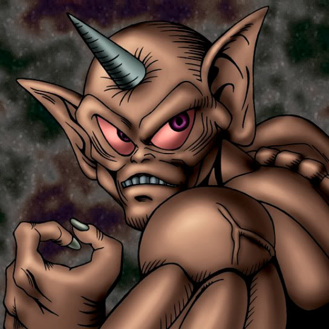

Horn Imp

Description: "When this card is flipped face-up, if there's a Jigen Bakudan in any adjacent space, teleport 1 Jigen Bakudan to an opponent's summoning area."
STATS
ATK: 1300
DEF: 1000DECK COST
Deck Cost per Card: 28EFFECT NOT IMPLEMENTED
Fusion List (3 Possible Fusions)
- Horn Imp + Arlownay = Rose Spectre of Dunn
- Horn Imp + Job-Change Mirror = Summoned Skull
- Horn Imp + Yamatano Dragon Scroll = Koumori Dragon